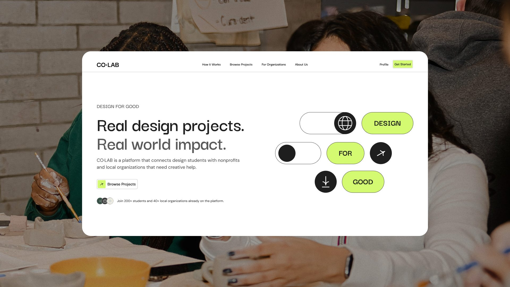
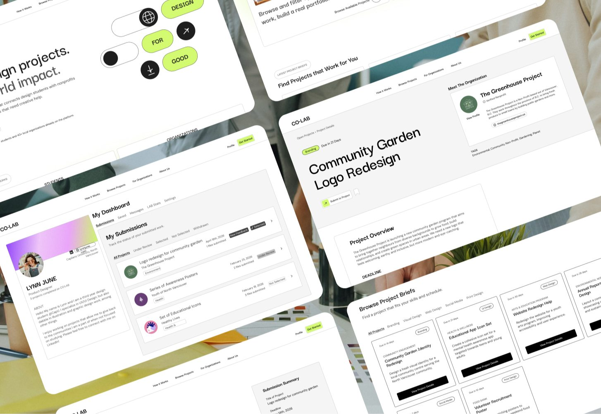
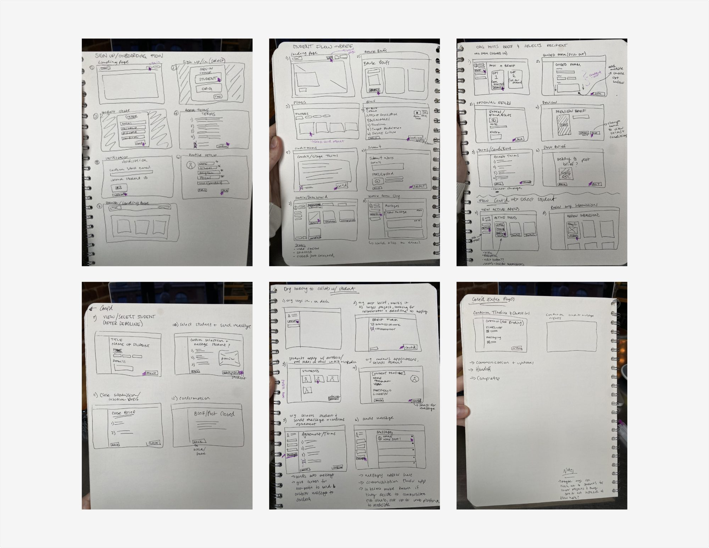
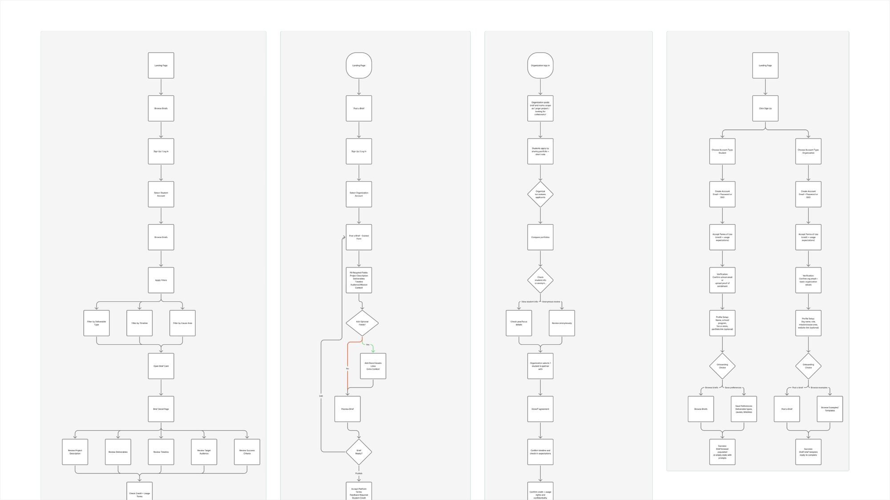
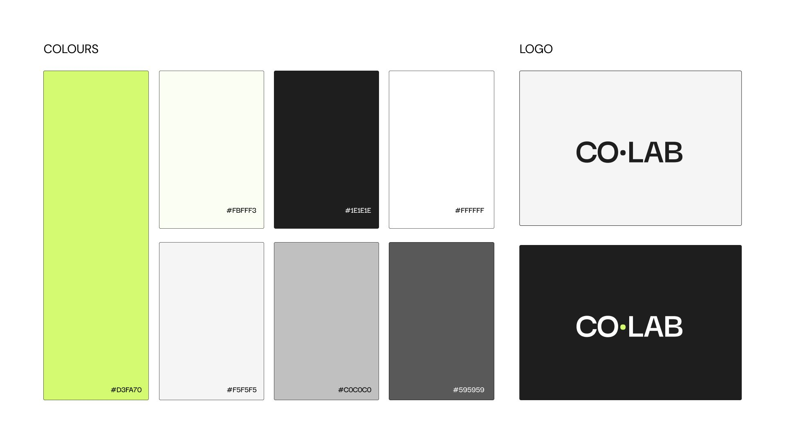
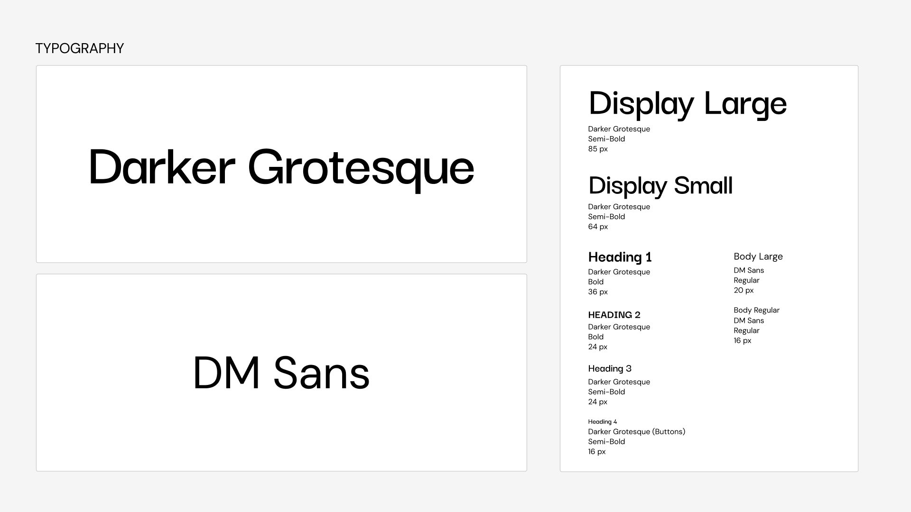
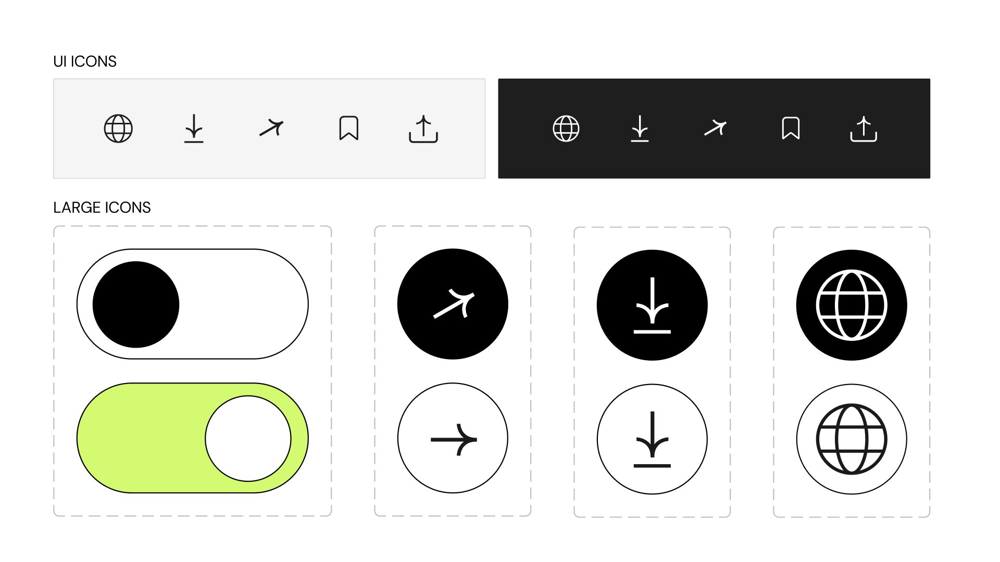
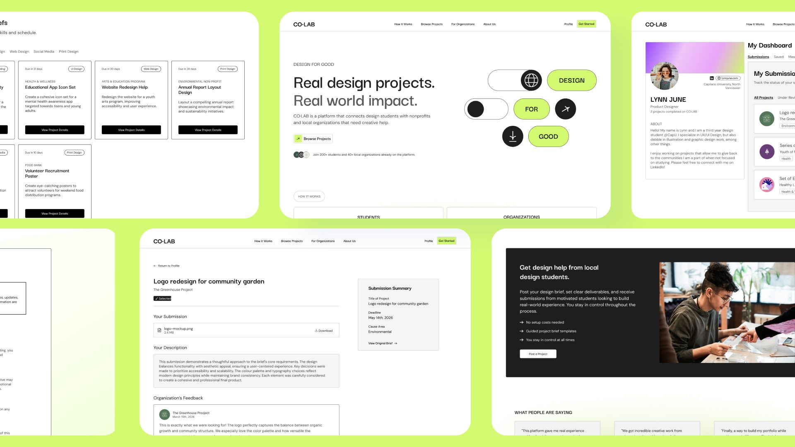
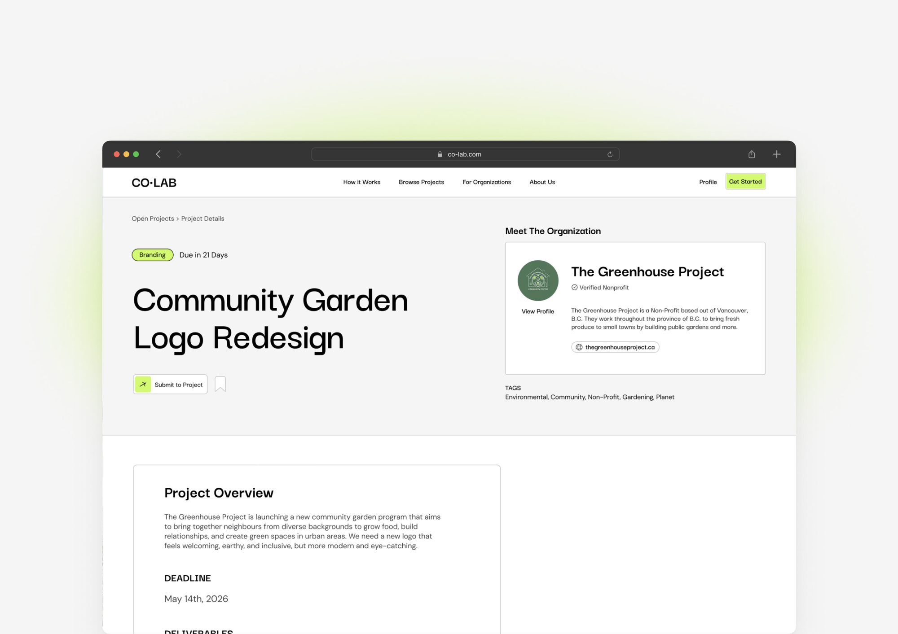
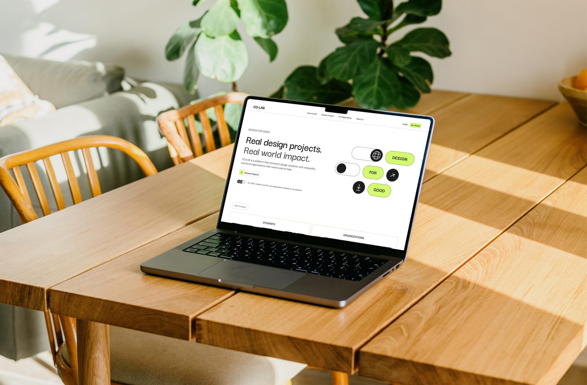

Product design · Capstone · 2026
CO·LAB
A platform that pairs design students with local nonprofits in need of creative help.
- Timeline
- January – April 2026
- What I did
- Research Product Design Prototyping
- Tools
- Figma FigJam
- Details
- Capstone Capilano University

(01) Overview
How might we give students real experience, and give local orgs the creative help they can’t afford?
CO·LAB was my final-semester capstone: a concept for a web platform that matches design students with local organizations looking for creative support.
The problem
Nonprofits often can’t afford dedicated design roles, while students struggle to find projects with real stakeholders and constraints.

(02) Research
Fairness and trust kept coming up, so that’s what CO·LAB is built around.
What I did
I interviewed nonprofits and design students, grouped the notes into themes, and used them to shape the platform’s priorities.

(03) MVP
Every tester finished every task, no help needed.
The goal
Students can find a project they like, understand the requirements, submit work and know exactly how it can be used.
The outcome
Testers understood what the platform was for and were clear on usage rights. Their notes on text sizing, icons and button placement shaped the final UI.

(04) Design system
Just enough system to stay consistent, with room for more personality.
What I did
A colour palette, logo, typography and an icon set for navigation and key moments in the flow.
What I’d change
I’d keep refining it and bring more of the brand’s personality in over time.



(05) Final thoughts
Big vision, small window. Lessons in learning to scope down & prioritize.
Challenges
Balancing this project with my practicum placement meant narrowing a big idea into a focused MVP, and learning not to over-polish things that didn’t need it yet.
Next steps
With more time, I’d start with branding so every screen feels connected, then build out onboarding, the organization side and profiles.



Credits
Research, design & prototyping
Hannah Gagnon
Capstone
Interaction Design, Capilano University
Thank you
Every student and nonprofit who shared their time, you shaped the project.